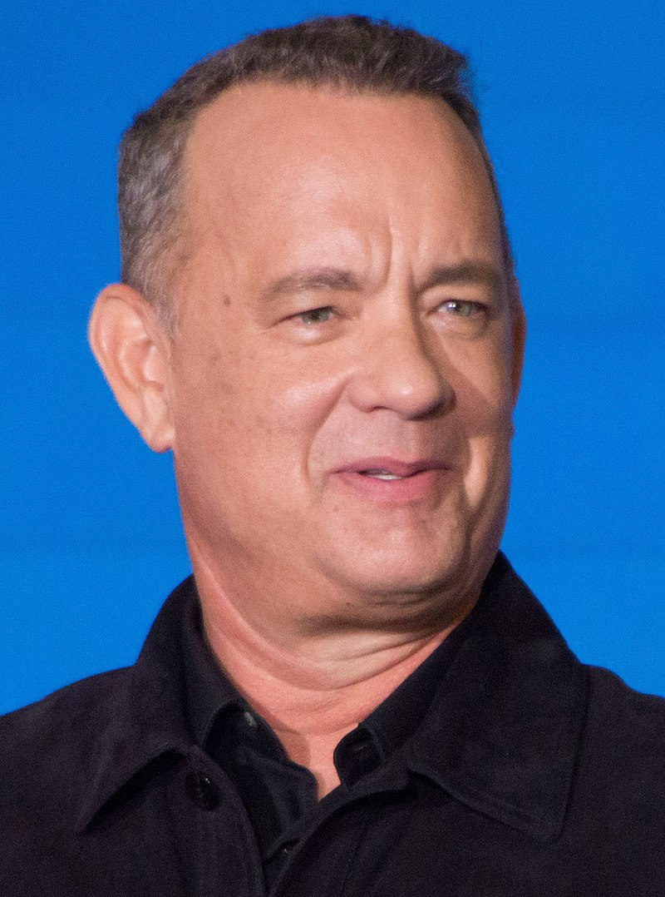
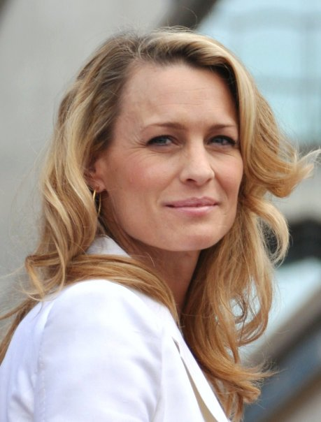
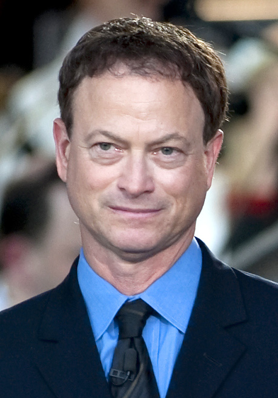

Obsada filmu
| Zdjęcie | Aktor | Odgrywana postać |
|---|---|---|
|  | Tom Hanks | Forrest Gump - główna postać w filmie. |
|  | Robin Wright Penn | Jenny Curran - żona Forresta Gumpa. |
|  | Gary Sinise | Porucznik Dan Taylor - dowódca plutonu, do którego należał Forrest. |
| Mykelti Williamson | Benjamin „Bubba” Bufford-Blue - czarnoskóry przyjaciel Forresta z wojny wietnamskiej, koneser krewetek. |
Źródło: Wikipedia.